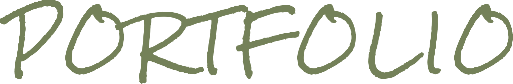
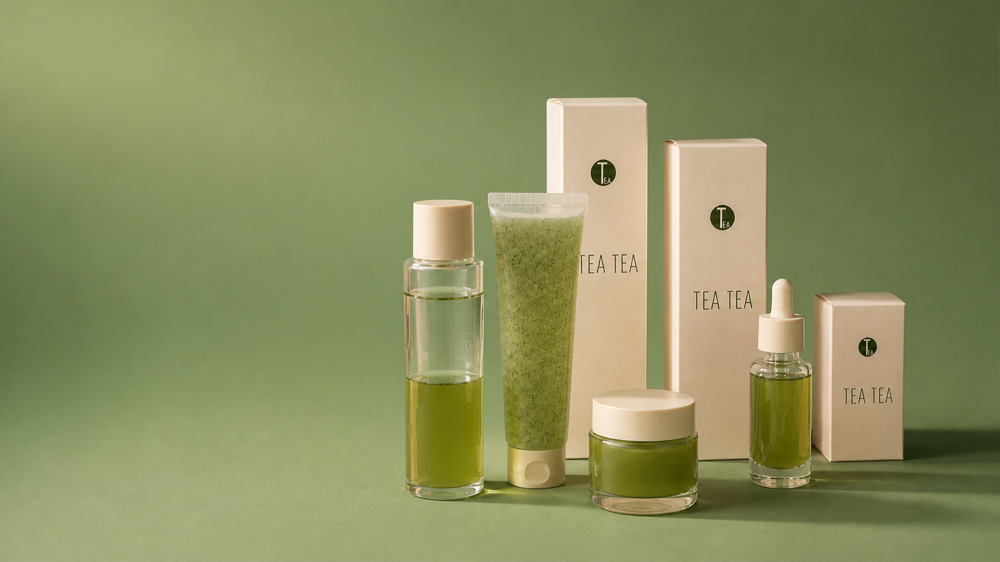
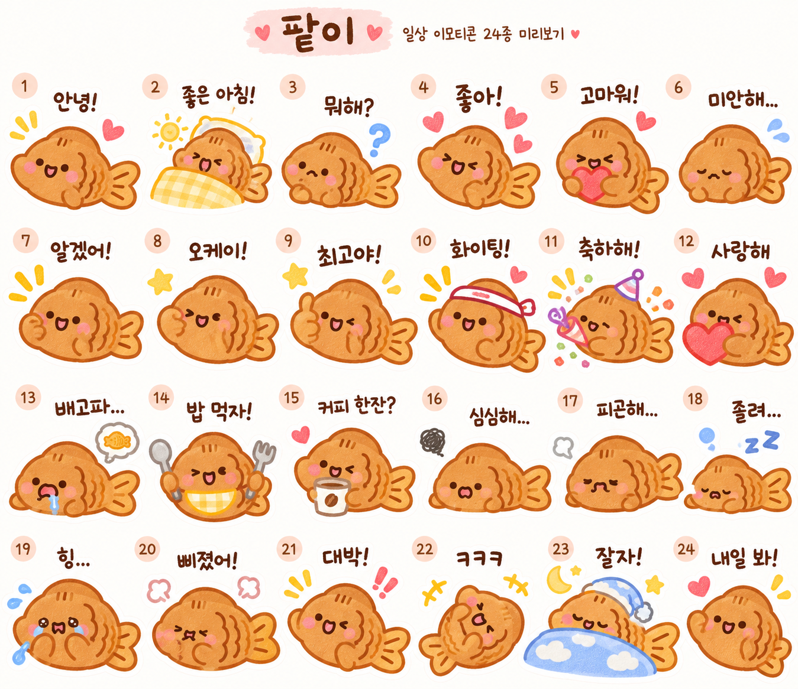

CURIOSITY
호기심과 아이디어.
새로운 아이디어를 발견하면 '이거 재미있겠다!'라는 감정이 먼저 생깁니다. 관심 분야를 특정 영역으로 제한하기보다, 흥미로운 것을 자유롭게 탐색하는 걸 선호합니다.
디자인 강점: 새로운 관점 발견 · 다양한 레퍼런스 탐색
브랜드에서 디지털까지, 경험을 연결하는 디자이너.
브랜드의 고유한 가치를 발견하고, 시각적 아이덴티티와 디지털 경험으로 연결합니다.
프로젝트 보러가기ABOUT ME
브랜드의 고유한 가치와 이야기를 발견하고, 이를 시각적 아이덴티티와 디지털 경험으로 연결하는 디자이너입니다. 브랜드부터 그래픽, UI/웹까지 하나의 일관된 경험으로 이어지는 디자인에 관심이 있습니다.
1. INTRODUCTION
호기심을 결과물로 만드는 사람.
저는 사용자의 작은 호기심에서 시작해, 관찰과 공감으로 브랜드와 제품이
더 좋은 경험으로 이어질 방법을 고민합니다.
디자인은 단순히 보기 좋은 결과물을 만드는 일이 아니라, 각기 다른 배경으로
가능성을 탐색하고 경험을 연결하는 과정이라고 생각합니다.
2. HOW I WORK
CURIOSITY
새로운 아이디어를 발견하면 '이거 재미있겠다!'라는 감정이 먼저 생깁니다. 관심 분야를 특정 영역으로 제한하기보다, 흥미로운 것을 자유롭게 탐색하는 걸 선호합니다.
디자인 강점: 새로운 관점 발견 · 다양한 레퍼런스 탐색INITIATIVE
흥미로운 아이디어를 단순히 상상하는 데서 끝내지 않습니다. 직접 만들어 보고, 도구를 배우고, 실제 결과물로 발전시키는 과정을 즐깁니다.
디자인 강점: 자기주도적 실행 · 빠른 실험IMMERSION
재미를 느끼는 작업에는 자연스럽게 시간과 에너지를 투자합니다. 작은 캐릭터 하나부터 브랜드 콘셉트, 웹사이트 구성까지 세부적인 요소를 탐색합니다.
디자인 강점: 집중력 · 깊이 있는 탐구ATTENTION TO DETAIL
캐릭터의 비율, 색상, 디자인의 일관성처럼 작은 요소도 중요하게 생각합니다. 원하는 결과물에 대한 기준을 명확하게 세우고 결과와 비교해 검토합니다.
디자인 강점: 일관성 유지 · 완성도 관리COMPLETION
새로운 시도를 좋아하지만 시작만 반복하지는 않습니다. 프로젝트를 마무리하고 성취감을 느낀 뒤 다음 목표를 찾는 편입니다. 시작한 일의 마무리와 성취를 소중하게 여깁니다.
디자인 강점: 결과물 중심 사고 · 목표 달성EXPLORATION
브랜딩, 캐릭터, UX, 여행, 영상 등. 다양한 경험을 통해 관점을 확장합니다. 서로 다른 경험에서 발견한 요소를 새로운 창작의 재료로 활용합니다.
디자인 강점: 확장적 사고 · 새로운 연결 가능성3. CREATIVE JOURNEY
DISCOVER
START
IMMERSION
COMPLETE
EXPLORE AGAIN
호기심과 몰입에서 발견한 새로운 관점과 경험을 연결하며,
그리고 새로운 시작을 향해 계속 나아갑니다.
4. MY DESIGN ATTITUDE

Branding

Product Design
.jpeg)
Character
다양한 관심사에서 작은 영감을 모아 하나의 경험으로 연결합니다.

Branding
Packaging designWeb.png)
Product Design
Web UI/UX
Character
Meme stickers관심을 새로운 가능성으로 발전시키고, 일관된 경험을 완성합니다.
Resume